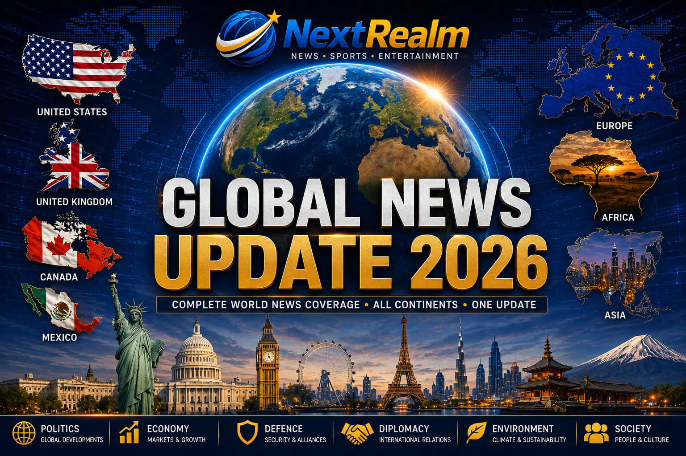

Published: 26 July 2026
Category: World News

Welcome to NextRealm's Global News Update. This special report brings together the latest political, economic, military, and international developments from around the world.
The United States remains one of the world's most influential nations in 2026. As the largest military power and one of the world's biggest economies, decisions made in Washington continue to influence global politics and international relations.
The United States continues to strengthen its alliances with NATO members and maintain its leadership role in international diplomacy and global security.
The country's military capabilities remain unmatched in several areas, including naval operations, air superiority, intelligence gathering, and strategic defence systems.
America's economic policies continue to have significant effects on global markets, trade agreements, and international investments.
Europe continues to play a major role in global politics, economics, and international security in 2026. European nations are working closely together on defence, economic growth, and diplomatic cooperation.
Several European countries have experienced extreme weather conditions in recent months, including major wildfires that affected parts of Scotland, Spain, and France. Governments have deployed emergency services and international assistance to help affected communities.
The North Atlantic Treaty Organization (NATO) remains one of the world's most important military alliances. European member states continue to strengthen their defence capabilities and maintain close diplomatic ties with their international partners.
European economies remain among the strongest in the world, contributing significantly to global trade, innovation, and international financial markets.
Europe also continues to lead discussions on climate policies, international cooperation, and humanitarian assistance across the globe.
The United Kingdom remains one of the world's most influential nations in diplomacy, defence, and international finance. London continues to serve as one of the world's leading financial centres.
Britain plays an important role within NATO and maintains strong military and diplomatic relationships with the United States, Canada, and European allies.
The United Kingdom continues to invest heavily in its armed forces, cybersecurity capabilities, and international partnerships to strengthen national security and global cooperation.
British universities, scientific institutions, and businesses continue to contribute significantly to innovation, healthcare, and economic development across the world.
The UK government remains actively engaged in international discussions concerning economic stability, climate policy, and humanitarian support efforts.
Africa continues to emerge as one of the world's fastest-growing regions in terms of economic development, technology adoption, and international partnerships.
Countries such as Nigeria, South Africa, Egypt, Kenya, and Ghana are attracting significant foreign investments in infrastructure, energy, telecommunications, and manufacturing industries.
African leaders are strengthening regional cooperation through political and economic organizations while working to improve trade, education, healthcare, and security across the continent.
The African Continental Free Trade Area (AfCFTA) continues to create new opportunities for businesses and economic integration among African nations.
Africa's young population and growing entrepreneurial ecosystem are positioning the continent to play a greater role in the global economy over the coming decade.
Several African nations are also expanding their diplomatic relationships with the United States, Europe, Asia, and the Middle East through trade agreements and international development initiatives.
Asia remains one of the world's most powerful and economically influential regions in 2026. Home to some of the world's largest economies and fastest-growing nations, Asia continues to shape global politics, trade, and innovation.
China remains one of the world's leading economic and military powers, playing a major role in international trade, diplomacy, and infrastructure development across multiple continents.
India continues to strengthen its position as one of the fastest-growing major economies in the world, expanding its influence in technology, manufacturing, and international partnerships.
Japan and South Korea remain global leaders in advanced manufacturing, electronics, and economic development while maintaining strong international alliances and security partnerships.
Saudi Arabia and other Middle Eastern nations continue to diversify their economies through major investment projects, tourism initiatives, and international economic cooperation.
Asia's growing influence in global trade and diplomacy makes it one of the most important regions to watch in the coming decade.
Canada continues to maintain one of the world's strongest and most stable economies. The country plays an important role in international diplomacy, environmental policy, and North American economic cooperation.
Canada remains a close ally of the United States and continues to strengthen its partnerships in defence, trade, and international humanitarian efforts.
The Canadian government is actively addressing environmental challenges, including severe wildfire seasons that have affected several regions of the country in recent years.
Mexico remains one of Latin America's largest economies and an important strategic partner in North America. Its trade relationships with the United States and Canada continue to drive economic growth and regional cooperation.
Mexico continues to invest in infrastructure, manufacturing, and international trade agreements that contribute significantly to its economic development.
The country remains a key player in regional diplomacy and international commerce while expanding opportunities in tourism, industry, and foreign investment.
The world in 2026 continues to evolve rapidly through political developments, economic transformation, international cooperation, and global challenges. Every continent has an important role to play in shaping the future of humanity.
From Washington to London, from Lagos to Tokyo, and from Ottawa to Mexico City, nations are working to strengthen their economies, improve international relationships, and address challenges that affect people around the globe.
Staying informed about world events helps us better understand the interconnected nature of modern society. At NextRealm, we remain committed to bringing you trusted and insightful global news from every corner of the world.